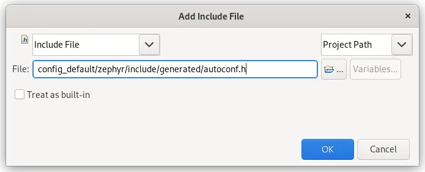
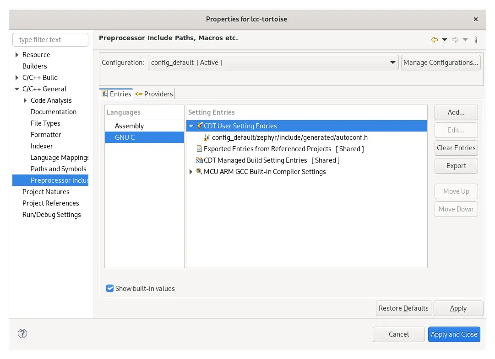

STM32CubeIDE
STM32CubeIDE 是 STMicroelectronics 推出的基于 Eclipse 的集成开发环境，专为 STM32 系列 MCU 和 MPU 设计。
本指南介绍使用该 IDE 设置、构建和调试 Zephyr 应用程序的过程。
必须已经使用 Zephyr 和 west 创建了项目。
这些步骤已在 Linux 上的 1.16.0 版 IDE 中验证可行。
项目设置
开始之前，请按照 入门指南 中的说明，确保已有可用的 Zephyr 开发环境。
在你的 Zephyr 环境中运行 STM32CubeIDE。例如：
$ /opt/st/stm32cubeide_1.16.0/stm32cubeide
通过 打开已有的项目：

选择 Project with existing CMake sources，然后点击 Next。
选择 并浏览到源代码所在位置。打开的文件夹中应包含
CMakeLists.txt和prj.conf文件。选择 并选择相应的 MCU。点击 Finish 后，项目就可以使用了。不过，还需要执行更多操作才能正确配置它。
在工作区中右键单击新创建的项目，然后选择 Properties。
进入 C/C++ Build 页面，将 Generator 设置为
Ninja。在 Other Options 中，以 CMake 参数格式指定目标BOARD。如果目标是源码树之外的开发板，还必须设置BOARD_ROOT选项。设置完成后的页面应类似于：
是否需要这些选项，取决于你的项目是否位于源码树之外。
进入 页面。选择 GNU C 语言，然后点击 选项。

点击 Add，添加一个指向 Zephyr
autoconf.h的 Include File，该文件位于<build dir>/zephyr/include/generated/autoconf.h。这样可以确保 STM32CubeIDE 获取 Zephyr 的配置选项。随后会显示以下对话框，请按如下方式填写：
添加包含文件后，属性页面应类似于：

点击 Apply and Close
现在可以使用工具栏上的 Build 按钮构建项目，使用 Run 按钮运行项目，并使用 Debug 按钮调试项目。
仅用于调试
如果只想使用 STM32CubeIDE 调试项目，可以按如下步骤操作：
首先，确保已编译项目并生成了
zephyr.elf。运行 STM32CubeIDE，通过 导入项目：

选择 ，然后点击 Next：

点击 Browse 浏览到构建文件夹，并选择
zephyr.elf。点击 Select 选择你的 MCU。如适用，还要选择 CPU 和/或内核。
点击 Finish。
现在可以使用 Debug 按钮调试该项目。